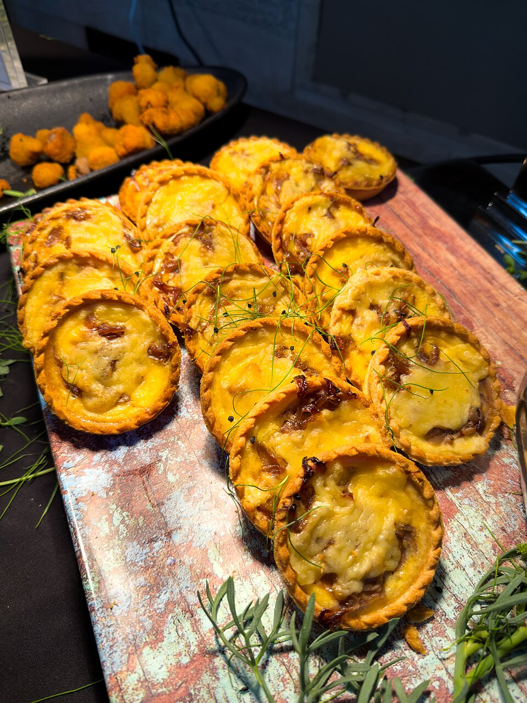

Tortas salgadas
Torta de cebola

Ingredientes
- Massa: 3 xícaras (chá) de farinha, 2 ovos, 2 colheres (sopa) de margarina, sal
- Recheio: 5 cebolas fatiadas, 2 colheres (sopa) de margarina, 2 cubinhos de caldo de carne, 2 ovos, 1 xícara (chá) de leite, 4 colheres (sopa) de farinha, 2 colheres (sopa) de queijo ralado
Modo de preparo
- Massa: misture, faça bola, embrulhe e gele.
- Recheio: frite a cebola; junte caldo, ovos, leite e farinha até desgrudar; esfrie.
- Abra a massa, espalhe o recheio, polvilhe queijo e asse em forno médio até dourar. Decore com cebola frita escura se quiser.